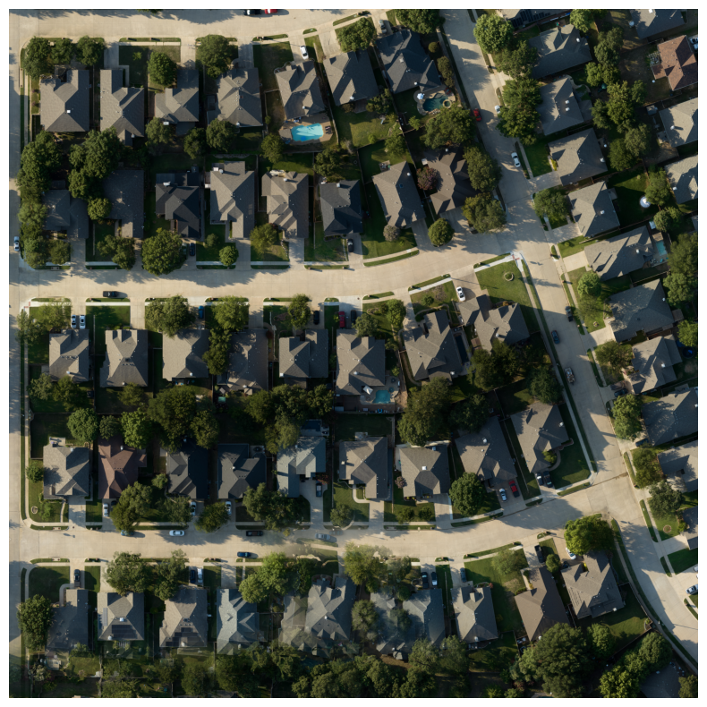
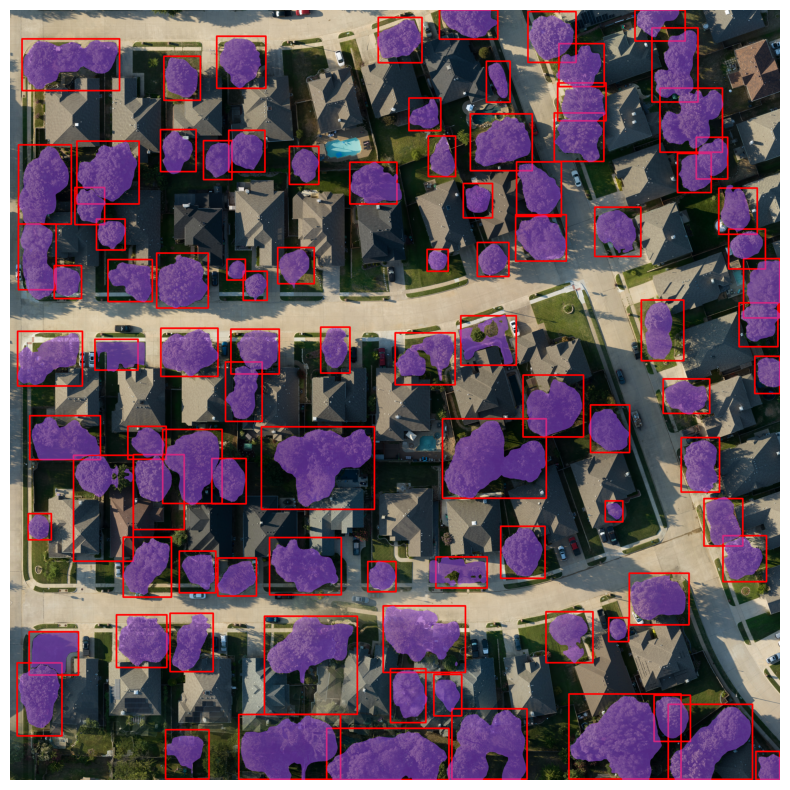
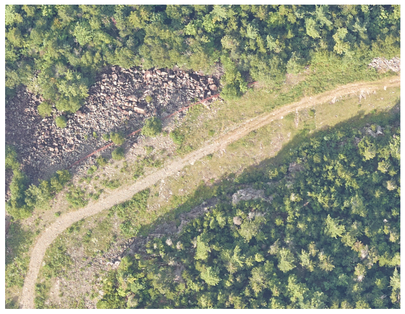
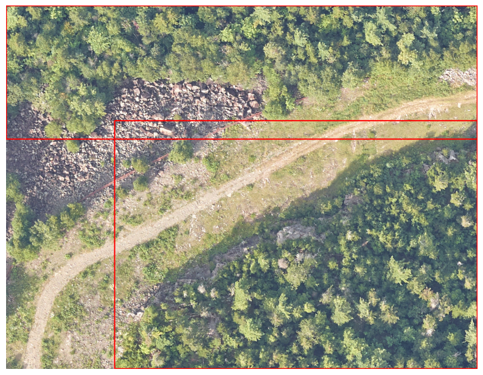
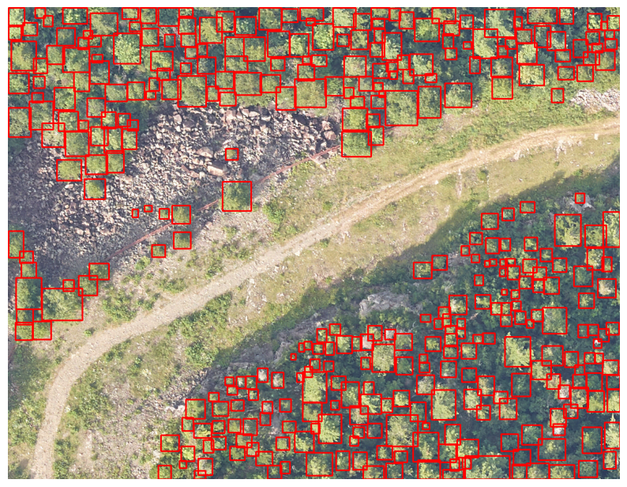
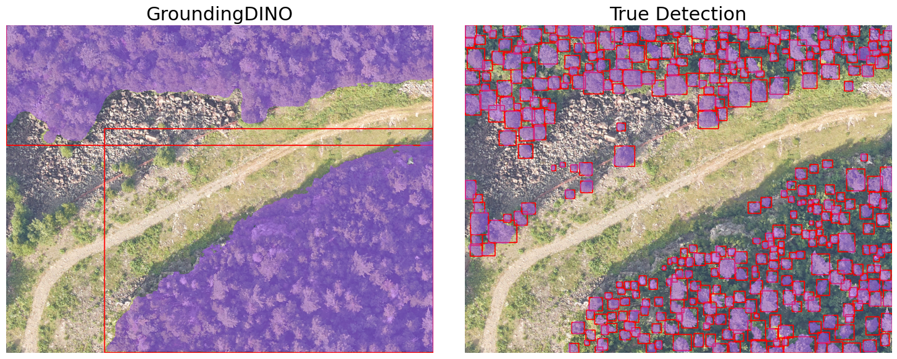
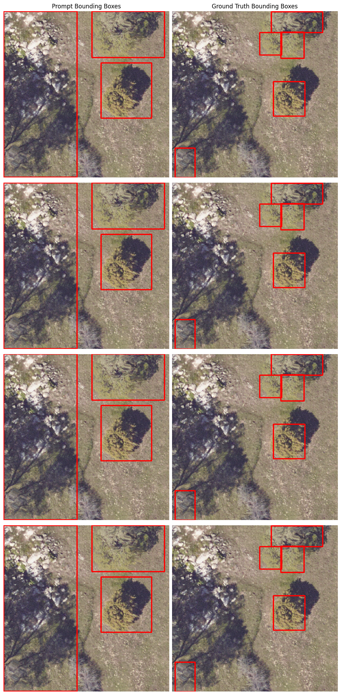
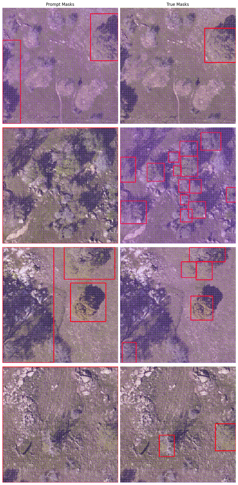
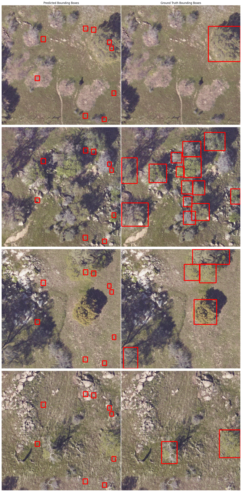
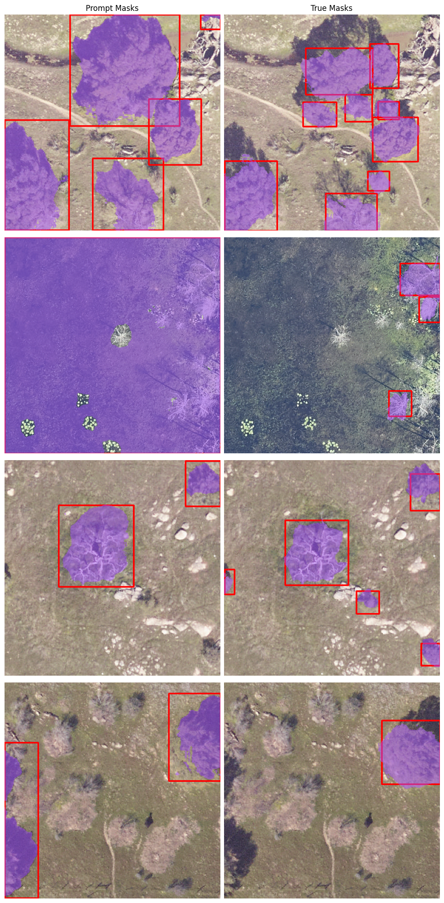

Abstract
This research explored how UAV imagery and modern vision foundation models can support urban tree stress analysis by first identifying individual tree crowns in complex aerial scenes. The pipeline combines RGB imagery with multispectral and geospatial signals, then uses open-vocabulary detection and prompt-based segmentation to move from large aerial patches toward tree-level crown instances.
The core system uses GroundingDINO for text-prompted tree localization and Segment Anything for mask generation. A central challenge is dense canopy structure: neighboring crowns often touch, overlap, or create weak visual boundaries, causing grouped detections, duplicate boxes, and unstable masks. To address this, the work investigated post-processing and refinement strategies, including non-maximum suppression variants, external box suppression, and a lightweight Box Decoder designed to produce more precise individual-tree bounding boxes before segmentation.
Motivation
Urban trees provide heat mitigation, air-quality benefits, stormwater interception, carbon storage, and public-health value. Monitoring tree stress at city scale is difficult if it depends only on manual field surveys, especially when canopies span dense neighborhoods and vary across species, seasons, and sensor conditions.
UAV and aerial imagery make it possible to observe tree canopy structure at higher spatial resolution than many satellite products. Multispectral vegetation signals such as NIR, Red-Edge, and NDVI can provide complementary information to RGB imagery, while canopy-height or surface-model channels can help distinguish tree structure from surrounding urban context. Accurate individual crown detection is an important prerequisite for downstream stress analysis, because vegetation indices and temporal change become more useful when they can be associated with a specific tree crown rather than an entire image patch.
Technical Problem
The technical goal is to detect and segment individual tree crowns from UAV and aerial imagery. Inputs may include RGB, NIR, Red-Edge, NDVI, canopy-height models, or DSM-like height information. The output needed for downstream analysis is not just a generic “tree area” mask, but a set of crown-level instances that separate neighboring trees as much as the imagery permits.
Dense urban and forested canopies create the hardest cases. Tree crowns can touch, overlap, or blend into each other with little visible separation. Generic detectors may place one large box around multiple crowns, while prompt-based segmentation models may produce a mask that follows the grouped box rather than separating instances. The refinement problem is therefore upstream of segmentation: if the bounding box prompt is too coarse, the mask is likely to be too coarse as well.
Method
Foundation-Model Detection and Segmentation
The initial pipeline uses GroundingDINO to generate text-prompted bounding boxes for tree crowns. Those boxes are then used as prompts for Segment Anything, which converts localized boxes into pixel masks. This design is modular: GroundingDINO supplies open-vocabulary localization, while SAM supplies prompt-conditioned segmentation.


Dense-Canopy Failure Modes
The same pipeline is less reliable when crowns form continuous canopy regions. GroundingDINO can under-segment by placing one box around several adjacent trees, or over-detect by producing a large group box plus smaller boxes for individual trees inside it. These are not just cosmetic errors: duplicate and grouped boxes change the prompts that SAM receives, so downstream segmentation quality depends strongly on bounding-box quality.




Box Refinement Direction
To improve instance-level localization, the research explored a Box Decoder module that uses frozen foundation-model embeddings rather than retraining the full detection and segmentation stack. The intended flow is: generate prompt boxes, encode RGB and multimodal inputs, encode the prompt boxes, refine the detections with a lightweight decoder, then feed refined boxes back into SAM for crown-level masks.
Implementation Details
The implementation uses GroundingDINO for open-vocabulary detection and Segment Anything for prompt-based segmentation. SAM is treated as a modular system with image encoders, prompt encoders, and mask decoders. In addition to RGB imagery, the pipeline considers multimodal inputs such as NDVI, Red-Edge, and canopy-height or DSM-derived information.
A key preprocessing step is converting raw aerial and geospatial data into model-ready tensors. RGB imagery can be passed through standard image pipelines, while multimodal channels require selection, stacking, standardization, and alignment. For Box Decoder experiments, image and prompt embeddings can be precomputed because the foundation encoders are frozen. This avoids repeatedly running expensive encoders during lightweight downstream training.
The work also examined post-processing for duplicate and nested detections. Standard intersection-over-union can miss some nested-box pathologies, so variants such as intersection over minimum area and external box suppression are useful when one box encloses another. The Box Decoder direction is inspired by detection-transformer style set prediction, but designed to stay modular relative to the existing GroundingDINO and SAM pipeline.




Contributions
I contributed to the computer vision and machine-learning pipeline for UAV-based tree crown detection and segmentation. This included working with multimodal aerial imagery, investigating how foundation models such as GroundingDINO and SAM could be adapted to remote-sensing imagery, and studying failure modes such as under-segmentation, duplicate detections, and dense-canopy ambiguity.
My work focused on the model-adaptation layer between general-purpose vision models and tree-level geospatial analysis: preparing data representations, evaluating detection and segmentation outputs, and exploring refinement strategies that improve individual-tree localization without requiring end-to-end retraining of the full foundation-model stack.
Results and Observations
Qualitatively, the GroundingDINO and SAM pipeline is strongest when trees are visually separated and crown boundaries are clear. In those cases, prompt boxes can localize individual crowns and SAM can generate plausible masks from those prompts. Dense canopy scenes remain more challenging because adjacent crowns can be visually continuous, making it difficult for a generic detector to infer the desired instance granularity.
The experiments also show that bounding-box quality has an outsized effect on segmentation quality. A refined or better-specified box can produce a more useful SAM mask, while a grouped box can cause the segmentation stage to preserve the grouping. This makes box refinement a practical target for improving crown-level segmentation without changing the entire system.
Technical Takeaways
- Foundation vision models are strong starting points for geospatial and ecological vision tasks, but dense canopy imagery still needs domain-specific adaptation.
- Tree crown segmentation is difficult because the visual boundary between neighboring crowns is often ambiguous or partially occluded.
- Multispectral and height-derived channels can provide complementary structure beyond RGB appearance alone.
- Bounding-box prompts are not a small detail: they directly shape SAM mask quality.
- Precomputing frozen image and prompt embeddings makes it more efficient to experiment with lightweight refinement modules.
Limitations and Future Work
More labeled urban tree data would improve model adaptation and evaluation. Dense canopy scenes likely require stronger instance-separation supervision, crown-boundary-specific labels, or a refinement objective that jointly considers boxes and masks. The Box Decoder experiments were exploratory and would benefit from more systematic training, validation, and error analysis across canopy types.
Tree stress analysis also requires more than crown detection. Future work should connect crown-level instances with vegetation indices, temporal change, species or neighborhood context, and field-validated health indicators. Additional evaluation across sensor conditions, seasons, and urban environments would be needed before drawing ecological conclusions from the vision pipeline.